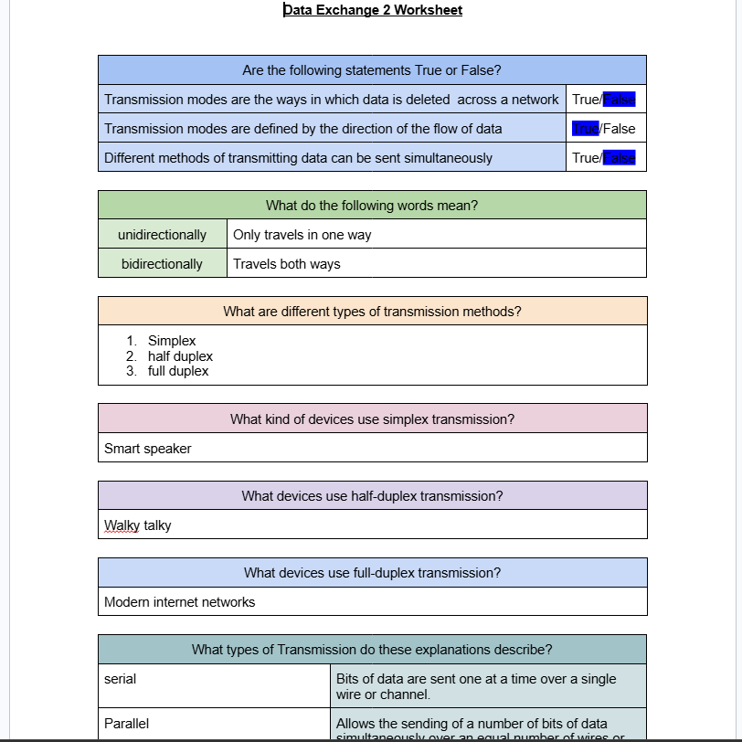

Home Page
unit 1
unit 2
unit 8
unit 13
unit 13 information
unit 14
unit 14 information

How do websites work? How does emails reach your computer? How does the use of computer application effect your daily lives? This unit provide an introduction to the modern online world. Starting with your own experiences, you will extends your knowledge about online services and investigates the technology and software that support them. You will learn more about a range of services includin email, online data storage, collaborative software, search engines, and blogging.
This unit will helps you understand the main technologies and process behind the internet and investigates how they come together to lets you view websites and send information acrost the world. The internet and web of tomorrow will be even more powerful, more connected, more intuitive, and a more important part of our lifes. This will results in an internet of services, objects, and infrastructure (ubiquitous computing) which will radically change our lifes. For example, smart appliances will be able to talk to each other, clothes will monitors our health, and retailers will access social medias to gain insight into shoppers preferences.
You will explores a range of digital devices, such as smart phones and digital music players, and consider the technology that enables these devices to share and exchanges information.This technology has created new concerns regarding security and privacy. You will investigates these concerns and considers how users should behaves online to safeguard theirselves and respects others.